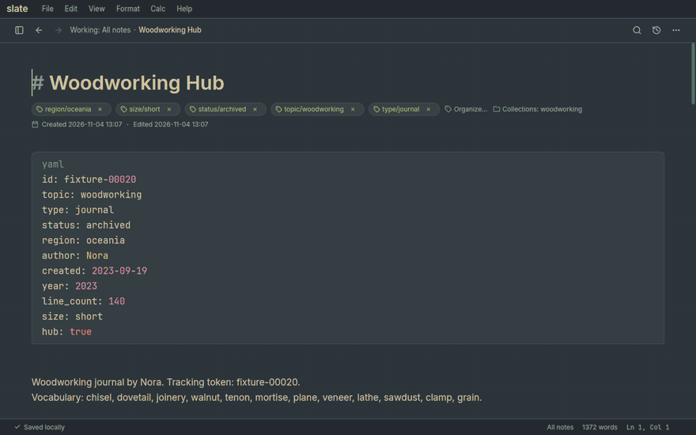

Links and the graph¶
Linking notes¶
Type [[ and a note picker opens. Type part of a title, then Tab or
Enter to pick a note. Slate then offers that note's headings; pick one to
link straight to it, or press Esc to link the whole note.

Away from the cursor a link shows the note's title, underlined. Underneath it
stores the note's id ([[01M7JWK8RMTRJ4X6RC7Y9CYH6E]]), so renaming the
other note never breaks the link.
| Key | Does |
|---|---|
[[ |
Insert a link and open the note picker |
Ctrl+] (vim also gd) |
Follow the link at the cursor |
Alt+Left / Alt+Right (desktop) |
Back and forward through the notes you visited |
K (vim Normal) |
Preview the linked note in a popup |
Ctrl+K (desktop Standard mode) |
Insert a link |
A link can carry a heading and its own label: [[id#Heading]],
[[id|label]], [[id#Heading|label]]. A link to a note that no longer
exists shows (no such note) and comes back to life if the note does.
Links also carry values: [[id]].total uses the variable total from the
linked note (see Variables from other notes).
Ordinary web links, [text](https://…), are styled too.
The graph¶
:graph (desktop: File › Note graph…) draws your notes as dots and their links
as lines, starting from the open note and the notes within two links of it,
in both directions.


The recording follows 26 example notes inside the larger demo notebook. Writing, research, numbers, design and projects each have their own color group. Selecting a note highlights its connections.
| Key | Does |
|---|---|
Arrow keys or h j k l |
Select the nearest note in that direction |
Tab / Shift+Tab |
Step through all notes |
Enter, double-click |
Open the selected note |
c or Space |
Recentre on the selected note |
+ / - |
More or fewer link hops (1 to 4) |
w |
Switch between the local graph and every note |
/ (desktop also Ctrl+F) |
Find notes in the graph by title; n / N step through matches |
| Scroll, drag (desktop) | Zoom, pan, or drag a note around |
Esc |
Close the graph |
On the desktop, hovering or selecting a note brightens it and its
neighbours while everything else fades. f or the gear button opens
Filters:
- Filter hides notes that don't match a search query (same syntax as the
note switcher), for example
#topic/sailing -#status/draft. - Orphans and Existing notes only hide unlinked notes and links to missing notes.
- Groups color the notes matching a query, each in its own circle, so a topic or tag stands out. Click a group's swatch to pick its color.
- Display adds arrows, and scales dots, lines and labels.
Filters, groups and display options are remembered.

Color groups can use the same queries as search. Here, each collection gets its own region, making related notes easy to spot.
In the terminal the graph is drawn with characters: ◆ is the centre note,
◉ the selection and ○ a link to a missing note. ] and [ zoom,
Shift+H/J/K/L pan, and 0 shows the whole graph again.
The first time you open the graph Slate reads every note's links once ("Indexing links…"); after that only notes you changed are read again, so it opens at once.